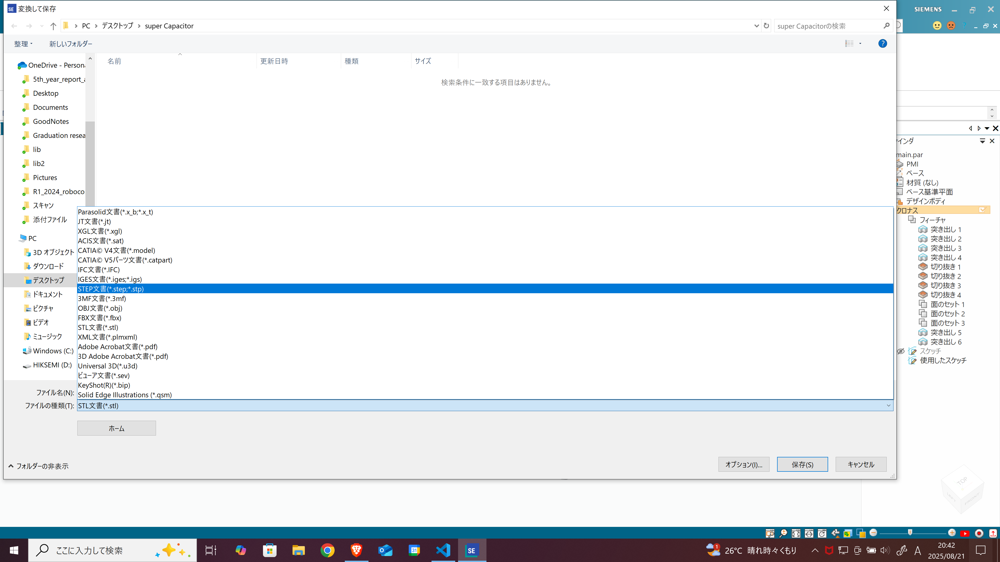

CADでSTEPファイルを作成する方法
STEPファイルとは？
STEPファイル（.step または .stp） は、
ISO 10303 規格に基づいた 3D CADデータの交換用フォーマット です。
特徴:
- ソフトウェア間での互換性が高い
- 3D形状データを中立形式で保存可能
- 部品・アセンブリの情報を保持できる
- 製造業（機械設計・電気筐体設計）で最も広く使われる中立フォーマット
例えば、SolidWorksで設計した部品をFusion 360やCATIAで開くときに利用されます。
代表的なCADでのSTEPファイル作成方法
以下情報には誤りがある場合があります 本ページ作成日8/21記載
Solid Edge

- メニューから 「ファイル → 変換して保存」 を選択


- 保存 をクリック
SolidWorks
- メニューから 「ファイル → 名前を付けて保存」 を選択
- 保存形式のプルダウンから 「STEP AP203/214/242」 を選択
- 必要に応じて オプション設定（単位や精度） を調整
- 保存 をクリック
Autodesk Fusion 360
- 左上の 「ファイル → エクスポート」 を選択
- 「ファイルタイプ」から **STEPファイル（*.step, .stp）* を選ぶ
- 出力先フォルダを指定
- OK を押すとクラウド経由で変換・ダウンロード可能
AutoCAD (3Dモデリング)
- 「EXPORT」コマンド を入力
- ファイル形式から **STEP (*.stp, .step)* を選択
- 保存先を指定してエクスポート
CATIA
- 「ファイル → 変換」 をクリック
- 出力形式として STEP を選択
- AP203 / AP214 / AP242 の規格を指定可能
- 保存
Autodesk Inventor
- 「ファイル → エクスポート → CAD形式」 を選択
- ファイルタイプで **STEPファイル（*.stp, .step）* を選ぶ
- オプションで 精度・単位・アセンブリ構成 を指定
- 保存